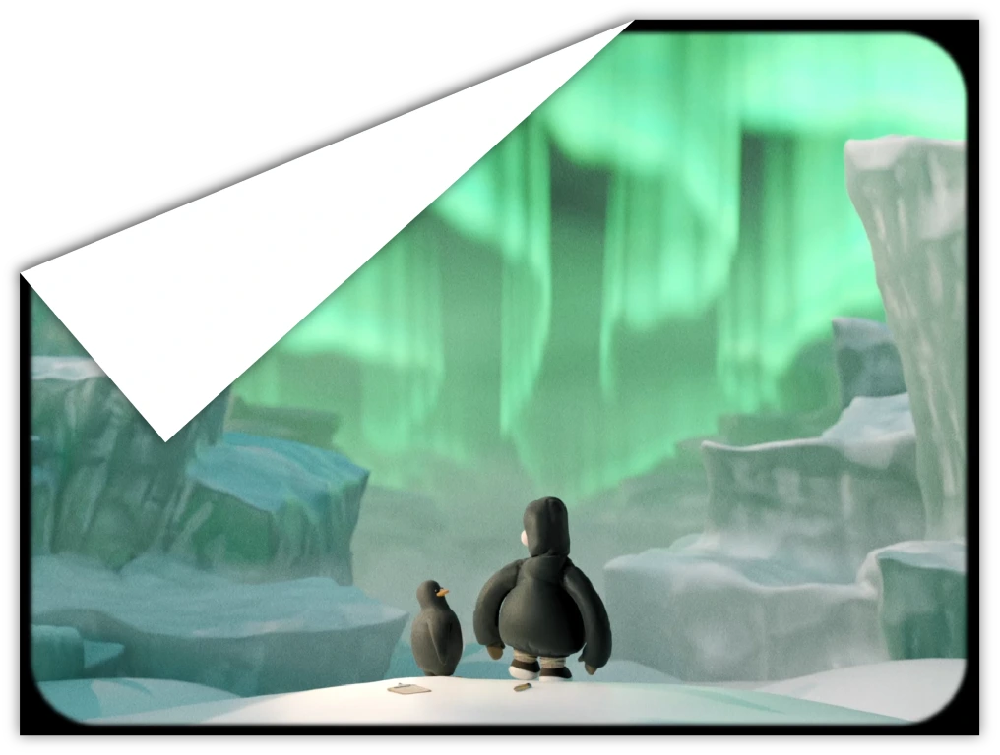
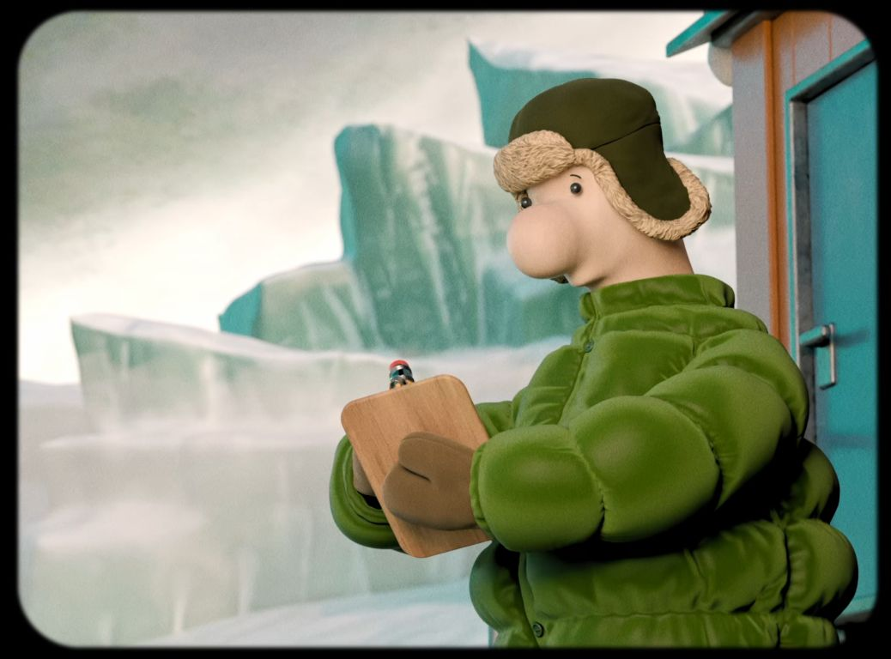
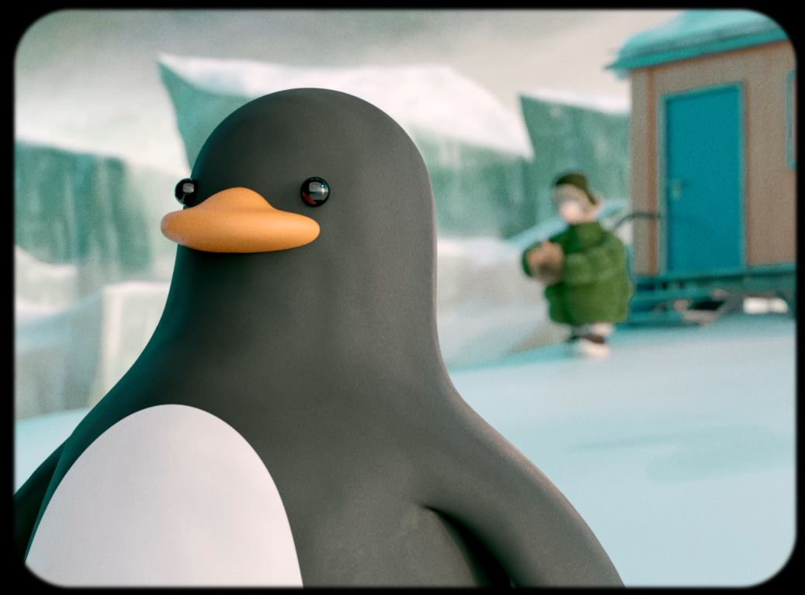
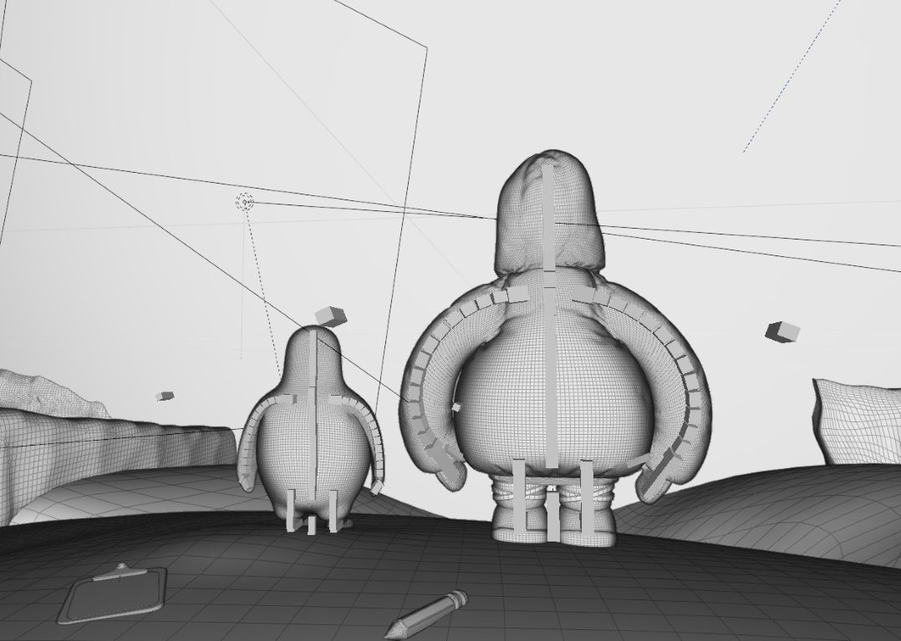

I created this one-minute 3D animation in August 2025 as part of the “3D Animation” course at Harz University of Applied Sciences. It follows a penguin researcher who realizes that penguins are more important to him than his research and that he would rather live among them. The animation was fully produced in Blender. All models, rigs, and animations were created by me. For editing and sound design, I used DaVinci Resolve. For the look and feel of the project, I aimed to create a pleasant and, despite the environment, warm atmosphere. I used sympathetic, stylized characters and elements reminiscent of analog aesthetics to bring the characters closer together. The one-minute time constraint and the somewhat stiff animation limit the project in some ways, but I am still satisfied with the story and atmosphere.
2025
Blender, DaVinci Resolve
I created this one-minute 3D animation in August 2025 as part of the “3D Animation” course at Harz University of Applied Sciences. It follows a penguin researcher who realizes that penguins are more important to him than his research and that he would rather live among them.
The animation was fully produced in Blender. All models, rigs, and animations were created by me. For editing and sound design, I used DaVinci Resolve.
For the look and feel of the project, it was important to me to create a pleasant and warm atmosphere despite the setting. I used sympathetic, stylized characters and elements reminiscent of analog aesthetics.
The one-minute time constraint and the somewhat stiff animation limit the project in some ways, but I am still satisfied with the story and atmosphere.
Final animation. Due to licensing reasons, unfortunately without music. Reduced quality for web display; a higher-quality version can be provided on request.

Character design: researcher. I drew inspiration from Aardman Studios and illustrations by Loriot. The researcher is meant to feel sympathetic and slightly lost. The clothing is thick, comfortable, and slightly old-fashioned for a cozy feeling.

Character design: penguin. The penguin is meant to feel cute, tangible, and slightly absent-minded.

Viewport view. For a more cartoon-like look, both characters use rigs with bendy bones for more “noodle-like” arms.